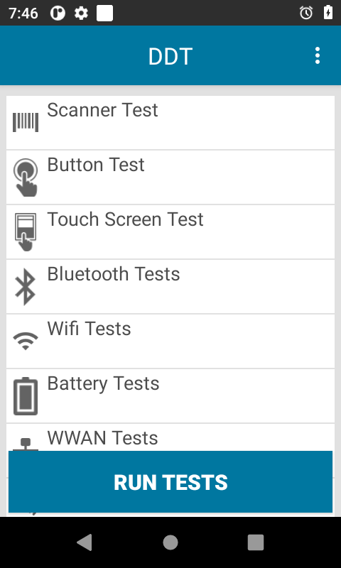

Présentation
Device Diagnostic Tool prend en charge deux modes de fonctionnement :
- Mode administrateur : l'administrateur peut accéder aux paramètres de l'application, modifier la configuration des tests et exécuter un test spécifique. Ce mode est activé par défaut.
- Mode utilisateur : l'utilisateur est autorisé à exécuter les tests uniquement. Il n'a pas accès aux paramètres de l'application, à la configuration des tests ni à un test spécifique. Pour activer le mode utilisateur, désactivez admin_mode (mode_admin) comme indiqué à la section Configuration.
Lancement de l'application
Exécutez Device Diagnostic Tool comme suit, au choix :
- Manuellement à l'aide de l'interface utilisateur : vous démarrez Device Diagnostic Tool et exécutez manuellement les tests. Reportez-vous à la section Interface utilisateur ci-dessous.
- À distance à l'aide d'un système EMM (Enterprise Mobility Management) : démarrez Device Diagnostic Tool en arrière-plan et générez un fichier journal à l'aide de la commande :
adb shell am broadcast -n "com.symbol.selfdiagnostics/com.symbol.selfdiagnostics.SESReceiver"
N'utilisez que l'une des méthodes pour exécuter Device Diagnostic Tool, sous peine qu'un comportement inattendu ne se produise.
Tests d'équipement
Lorsque vous démarrez l'application pour la première fois, l'écran principal affiche les tests disponibles :
|  |  |
Écran principal
Si un test a déjà été réalisé, son nom est suivi de la date de sa dernière exécution.
Touchez Exécuter les tests sur l'écran principal pour exécuter tous les tests. Sont exécutés les tests sélectionnés sur l'écran Configurer les tests. Une fois la procédure démarrée, vous êtes invité à effectuer des actions complémentaires lors de l'exécution des tests suivants : Test du scanner, Test des boutons, Test d'écran tactile et Audio Test. Il est recommandé d'exécuter tous les tests dans le cadre d'une utilisation normale de l'équipement (en d'autres termes, évitez qu'il ne soit placé dans la station d'accueil ou connecté par USB à un ordinateur). Une fois les tests terminés, les résultats sont affichés :
 Réussite : le test a été exécuté et est réussi. Le résultat est conforme aux critères de test.
Réussite : le test a été exécuté et est réussi. Le résultat est conforme aux critères de test.
 Échec : le test a été exécuté et n'est pas conforme aux critères définis.
Échec : le test a été exécuté et n'est pas conforme aux critères définis.
Information : des données ont été extraites et affichées.
En mode administrateur, vous pouvez également exécuter un test spécifique. Pour ce faire, touchez la catégorie appropriée, puis Exécuter les tests.
Si les valeurs Le test a échoué ou Le délai imparti au test a été dépassé sont renvoyées, la même icône rouge indiquant un danger s'affiche.
Pour afficher l'option Aide, touchez le menu supérieur droit de l'écran principal. Vous accédez ainsi au portail d'assistance de Device Diagnostics Tool.
Test du scanner
L'utilisateur est invité à lire un code-barres. Résultats :
- Test du scanner : affiche les données du code-barres
- Type d'étiquette : affiche le type de codes-barres ou le décodeur lu
Remarque : si l'utilisateur exécute le test du scanner sur un TC55, il doit appuyer sur le bouton de lecture pour qu'il soit détecté.
Test des boutons
L'utilisateur est invité à appuyer sur les boutons physiques de l'équipement : déclencheur de lecture (gauche ou droite), talkie-walkie et contrôle du volume (+/-). Résultats :
- Test des boutons : Le test a réussi, Le test a échoué ou Le délai imparti au test a été dépassé
Remarque : si les boutons physiques sont remappés, le test des boutons ne fonctionne pas comme prévu.
Test d'écran tactile
L'utilisateur est invité à toucher chaque section de la grille à l'écran.
- Test d'écran tactile : Le test a réussi, Le test a échoué ou Le délai imparti au test a été dépassé
Tests Bluetooth
Ces tests vérifient si la radio Bluetooth fonctionne correctement et renvoient des informations associées. Résultats :
- Nom : affiche le nom Bluetooth
- Mise sous/hors tension de radio : Le test a réussi ou Le test a échoué. L'état de la radio avant le test n'est pas modifié.
- Opérationnelle/Non opérationnelle : Opérationnelle ou Non opérationnelle
- Identifiable/Connexion possible : Connexion possible, Identifiable ou Aucun
Test WiFi
Ces tests vérifient le fonctionnement de la radio WiFi et renvoient des informations associées. Résultats :
Adresse MAC : Valide ou Non valide
Test du réseau : affiche Connecté ou Non connecté. Le test échoue si la fonction WiFi n'est connectée à aucun réseau. L'état de la radio avant le test n'est pas modifié. Si le test réussit, les valeurs suivantes s'affichent :
- Intensité : indique l'intensité du signal
- ip : affiche l'adresse IP
- bssid : Valide ou Non valide
- Vitesse : affiche la vitesse de connexion
Test de la batterie
Ce test vérifie l'état de la batterie et renvoie des informations associées. Résultats :
- Numéro de référence : affiche le numéro de référence de la batterie
- Numéro de série : affiche le numéro de série de la batterie
- Date de fabrication : affiche la date de fabrication de la batterie
- Decommission Status (État de mise hors service) : affiche l'état de santé de la batterie comme suit :
- Satisfaisant : l'état de santé de la batterie est satisfaisant
- Need to replace battery (Remplacement de batterie requis) : le nombre de cycles de charge de la batterie a atteint le contenu du paramètre Valeur seuil de batterie. La batterie devra bientôt être remplacée.
- Inconnu : il a été impossible d'extraire des informations sur l'état de santé de la batterie
- Tension : affiche la tension
- Alimentation : affiche l'alimentation
- Température : affiche la température
- Niveau de charge : affiche le pourcentage (%) de charge restant
- Capacité actuelle : affiche la quantité d'énergie stockée dans la batterie en mAh (milliampère-heure). Seules les batteries PowerPrecision+ sont prises en charge.
Test du réseau étendu sans fil
Ce test vérifie le fonctionnement de la radio WWAN et renvoie des informations associées. Résultats :
- État de carte SIM : le mode avion doit être désactivé. L'une des valeurs ci-dessous est affichée :
- Présente : la carte SIM est insérée
- Absente : la carte SIM n'est pas insérée
- État de voix : affiche l'une des valeurs suivantes :
- Voix en service
- Voix hors service
- Voix en cas d'urgence uniquement
- Voix hors tension
- État de voix inconnu
- État des données : affiche l'une des valeurs suivantes :
- Données connectées
- Données déconnectées
- Données en cours de connexion
- Données interrompues
- État des données inconnu
- Type de réseau étendu : affiche le type de réseau, à savoir : LTE, 2G, 3G, 4G ou Non disponible
- Intensité du signal : affiche l'une des valeurs suivantes :
- Sans objet : la carte SIM n'est pas insérée
- Inconnu : l'équipement est peut-être en mode avion
- Intensité du signal : exprimée en dBm
- Numéro de téléphone : Valide ou Non valide, selon que le numéro de téléphone est révélé ou non par le fournisseur de services
- ID d'équipement : Valide ou Non valide, selon que l'ID de l'équipement est révélé ou non
Test audio
Ce test vérifie le fonctionnement du microphone et du haut-parleur de l'équipement. Résultats :
- Test audio : Le test a réussi ou Le test a échoué
Tests de carte SD
Ce test vérifie le statut de la carte SD et les informations correspondantes. La carte SD doit être installée pour pouvoir être détectée. Résultats :
- Carte SD : Présente ou Absente
- Lecture : Réussite ou Sans objet
- Écriture : Réussite ou Sans objet
- Espace total : quantité d'espace total en Go sur la carte SD ou Non disponible
- Espace disponible : quantité d'espace disponible en Go sur la carte SD ou Non disponible
Téléchargement des fichiers journaux
Vous pouvez télécharger le fichier de configuration et les fichiers journaux à la demande, de l'équipement vers un serveur FTP. Fichiers téléchargés : fichiers journaux des résultats des tests, configuration.xml, fichier journal d'historique et fichier journal d'état. Pour accéder à cette fonctionnalité, touchez le menu Options en haut à droite dans l'écran principal de l'application et sélectionnez Télécharger.
Options de l'écran Télécharger :
- Protocole : FTP (valeur par défaut), unique option disponible
- Adresse IP : entrez l'adresse IP du serveur FTP (paramètre obligatoire)
- NomUtilisateur : entrez le nom d'utilisateur de connexion (paramètre obligatoire)
- Supprimer le fichier de l'équipement : si cette option est activée, tous les fichiers (fichiers de configuration et fichiers journaux) sont supprimés de l'équipement une fois le téléchargement terminé
Si vous avez entré les détails du serveur dans l'écran Paramètres, ces options sont automatiquement renseignées et vous pouvez les modifier si besoin est.
Une fois les informations requises entrées, touchez Télécharger. Entrez le mot de passe FTP lorsque vous y êtes invité. Si la connexion aboutit, les fichiers sont téléchargés vers le serveur FTP dans un fichier .zip au format suivant : DDTLOG_[TimeStamp(ddMMyyyyHHmmss)]_[device_identifier].zip, où :
- [TimeStamp(ddMMyyyyHHmmss)] est l'horodatage utilisé. Le jour est exprimé par 2 chiffres, le mois par 2 chiffres, l'année par 4 chiffres, les heures par 2 chiffres, les minutes par 2 chiffres et les secondes par 2 chiffres.
- [device_identifier] est l'identifiant unique de l'équipement et affiche l'une des valeurs ci-dessous selon la plateforme Android :
- UUID : s'applique aux équipements Android 10 et ultérieurs
- Numéro de série : s'applique aux équipements Android Oreo et antérieurs
Planification des tâches
Vous pouvez planifier l'exécution des tests d'équipements à une heure spécifique. Lorsqu'une tâche est planifiée, elle est automatiquement répétée chaque semaine à l'heure spécifiée. Vous pouvez supprimer la tâche planifiée après son exécution pour éviter qu'elle ne soit répétée. Seuls les tests d'équipements qui ne nécessitent pas l'intervention de l'utilisateur peuvent être planifiés. Lorsqu'une tâche planifiée est terminée, elle est consignée dans /storage/emulated/0/Android/data/com.symbol.selfdiagnostics/files/history.log.
Pour planifier une tâche :
- Touchez le menu Options en haut à droite dans l'écran principal de l'application et sélectionnez Planificateur de tâches.
- Dans l'écran Planificateur de tâches, appuyez sur le bouton « + » pour créer une tâche.
- Sélectionnez l'heure d'exécution de la tâche en indiquant l'heure et les minutes.
- Sélectionnez le test d'équipement à exécuter.
- Sélectionnez le jour de la semaine où doit être exécuté le test.
- Touchez l'icône d'enregistrement en haut à droite.
Pour modifier une tâche planifiée existante :
- Dans l'écran Planificateur de tâches, touchez une tâche planifiée recensée.
- Effectuez les modifications requises.
- Touchez l'icône d'enregistrement en haut à droite.
Pour supprimer une tâche planifiée existante :
- Dans l'écran Planificateur de tâches, touchez une tâche planifiée recensée.
- Touchez l'icône Corbeille en haut à droite.